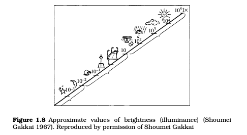
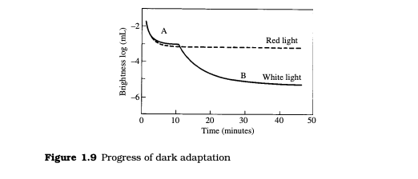

Light, Vision and Photometry
ADAPTATION AND RESPONSIVITY OF THE
HUMAN EYE
The brightness (more correctly the illuminance) provided by natural
and artificial light sources used in daily life ranges widely, as shown
in Figure 1.8 (Shoumei Gakkai 1967). The human eye can see an
object in direct sunlight where the illuminance is about 100 000
lx, or at night without moonlight at an illuminance of about 0.0003
lx (as described in Section 1.6, the unit of illuminance is the lux,
abbreviated lx). To adapt the eye over such a wide range of illuminance, the pupil adjusts the quantity of light reaching the retina by
changing its size. Thus, the pupil functions like the diaphragm of a
camera. Because the pupil changes its diameter in a range from 2
to 7 mm, the quantity of light adjustable in this way covers a range
of only a factor of 12
Thus the change in pupil diameter is insufficient for full control of the quantity of light. Accordingly, the rods and cones share
the function by changing the responsivity of the retina. In a relatively bright environment, the cones alone function to give what is

called photopic vision. In a relatively dark environment, the rods
alone function to realize what is called scotopic vision. In environments having an intermediate brightness between photopic vision
and scotopic vision, both the cones and the rods function to provide what is called mesopic vision. Photopic vision is distinguished
from scotopic vision by the luminance range in which it operates.
Photopic vision occurs for luminances of about 3 cd/m2 or higher
(see Sections 1.5 and 1.6 for the definitions of photometric quantities and units), and scotopic vision occurs for luminances of about
0.003 cd/m2or lower. These numbers depend somewhat on other
conditions, such as the color of the stimuli.
When one enters a bright environment from a dark one, one’s
vision changes from scotopic to photopic via mesopic. This change
is completed in about 1 min, and the eye readily adapts to the bright
environment. On the contrary, when one enters a dark environment from a bright one, vision changes from photopic to scotopic
much more slowly. As shown in Figure 1.9, it takes about 30 min
to completely accomplish the adaptation (Chapanis 1947).
In photopic vision, the photochemical reaction in the rods saturates, and they become inert to light and the cones alone are left
active. The photochemical reaction in the cones continues to an
upper limit of about 106 cd/m2. If this limit is exceeded, the result is
a blinding and uncomfortable sensation that can damage the eyes.
Referring to Figure 1.9, the detectivity of the eye (the minimum
luminance sensed as light) for white light changes from curve A to
curve B as the rods take over from the cones upon transfer from
light adaptation to dark adaptation.

The ordinate of Figure 1.9 is luminance in units of millilambert
(mL). These can be converted to cd/m2 by using a conversion factor
of 1 mL =3183=10/��cd/m2. In the initial stage of dark adaptation
(about 10 min), cones function to give curve A but, in the later
stages, rods with their higher responsivity take over to yield curve
B. However, under red light, the portion of curve B in which the rods
function does not appear. This is because the rods do not respond
to high (red) wavelengths.
In scotopic vision, rods are active and exhibit a relatively high
response to light. With decreasing luminance, however, even the
rods finally become insensitive. Depending on the experimental
conditions, the luminance limit at which the rods lose sensitivity is
about 10−6 cd/m2. Taking into account absorption and scattering
of light inside the eye and the absorption efficiency of the retina,
this limit corresponds to about 5–14 photons incident on the rods.
Cones on the other hand require about 100–1000 as many photons before they respond. By comparison, four or more photons
are necessary to induce a reaction in the fine silver halide grains
of high-speed photographic film. It can be seen that rods have a
detectivity that compares well to that of photographic film.